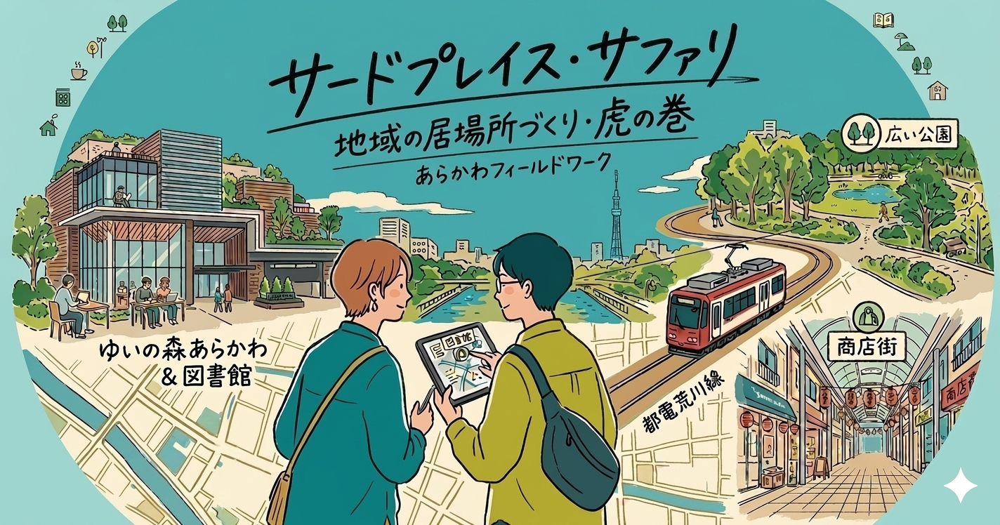
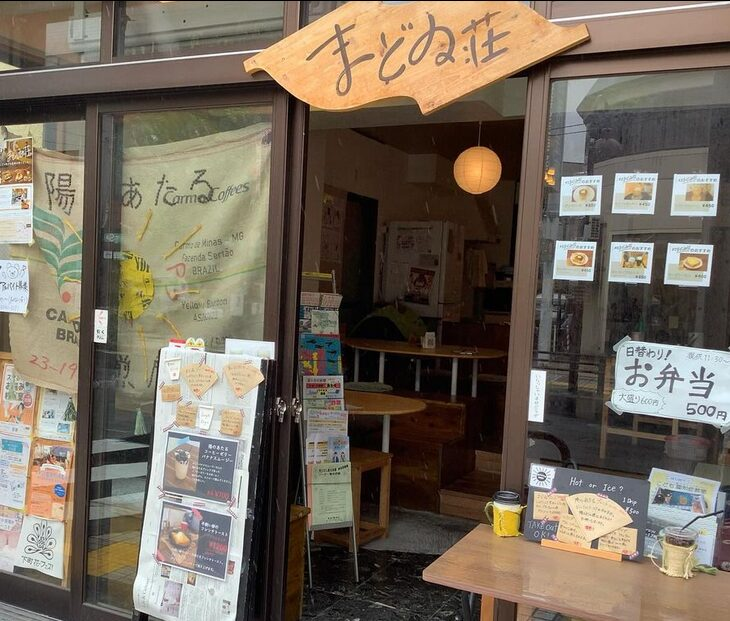
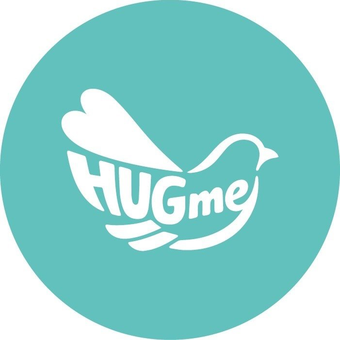
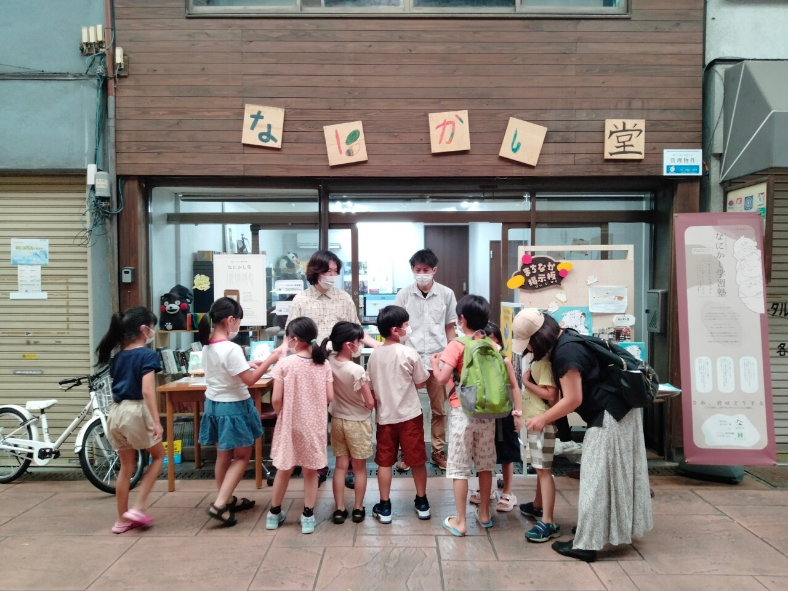
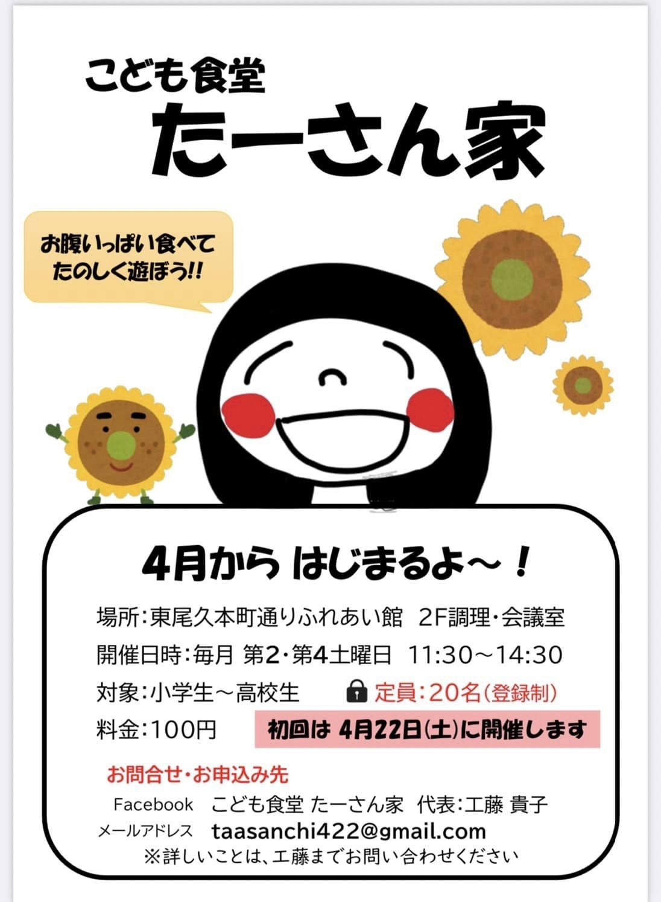
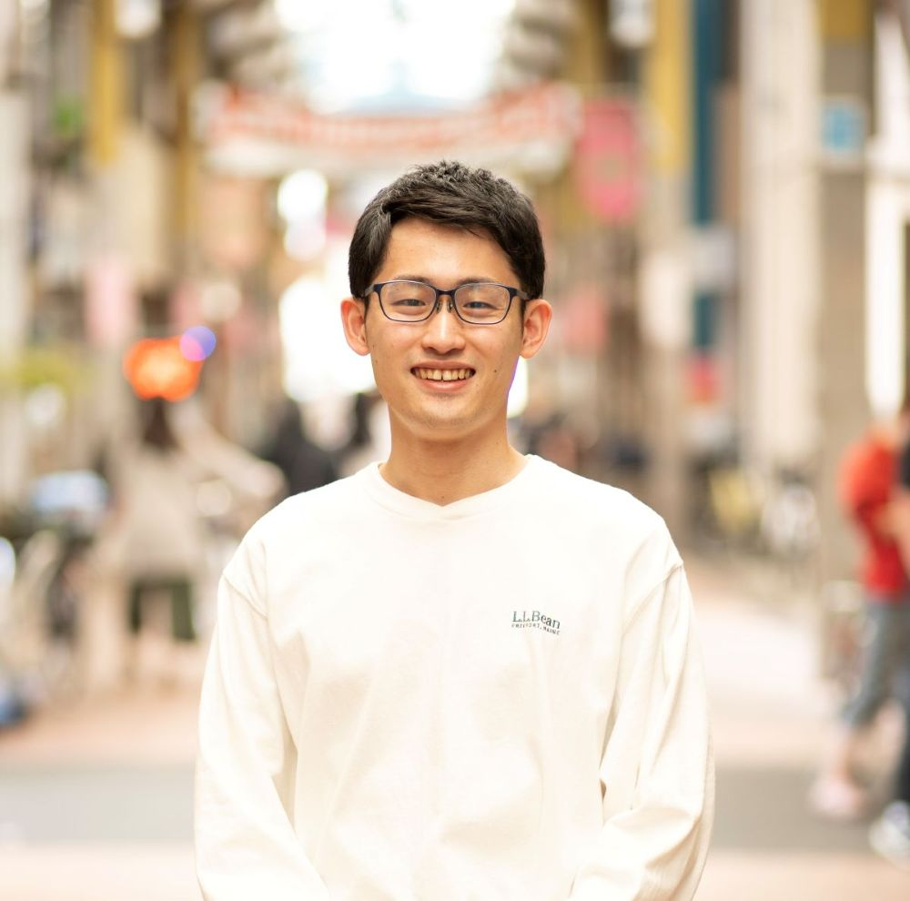
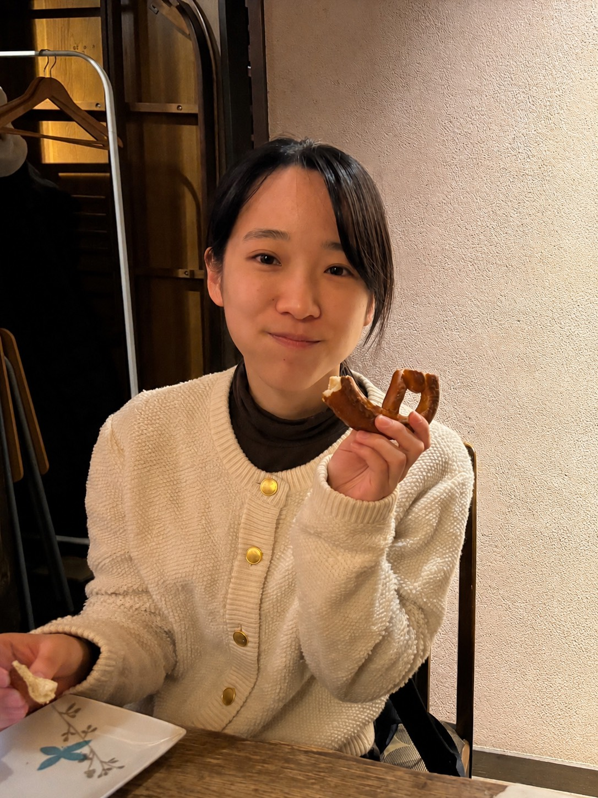

6月の出会いから、8月のカタチまで。
この夏、区内を駆け巡る3ヶ月のフィールドワーク。
申込締切：2026年5月31日（日）
区内の「現場」を訪ね、そこで働く大人や大学生の先輩と交流しながら、
自分たちの手で地域活動をデザインしてみませんか？
福祉施設、伝統工芸、クリエイティブな活動拠点など、ふだん立ち入れない場所へ潜入。
見て、聞いて、動いて—この夏だけの特別な体験が待っています。
荒川区内のユニークな現場を訪ね、そこで働く大人たちの「リアル」に触れます。




荒川区に在住・在学、または「地域活動」に興味があるメンバーを募集します。
荒川わかもの団を運営する大学生・社会人メンバーです。一緒に楽しい夏をつくりましょう！

地域の現場に触れて興味や関心を拡げるきっかけにしてほしいです。

ワクワクや楽しい気持ちを大切に、地域であなたのやりたいを見つけるお手伝いをします😆
イベント企画と写真撮影が得意です。みなさんの「やってみたい」を形にするお手伝いをします。
詳細・お申し込みは下記フォームからどうぞ。
初めての方も、ぜひお気軽にご応募ください！
申込締切：2026年5月31日（日）